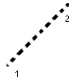

Cette page reprend l'aide d'OptGeo 3.03, écrite pour un ordinateur et une souris, adaptée à la version web : les gestes (au doigt ou à la souris), les boutons et les menus décrits sont ceux de cette version. Mode d'emploi détaillé : Utiliser OptGeo sur le web.
Réseau diffractant

Définition
Il est défini par les extrémités 1 et 2, que l'on place au doigt ou à la souris après avoir touché le bouton « Réseau » de la palette des objets (famille « Divers ») (voir Placer un objet) ; on peut aussi passer par le menu « Ajouter (par coordonnées) », puis « Réseau diffractant » (sous « Divers »).
Le panneau des propriétés s'ouvre ensuite pour choisir
- si c'est un réseau en transmission ou en réflexion
- le nombre de traits par mm
- les ordres représentables
Remarques
Cet objet relève de l'optique ondulatoire.
Il est utilisé ici de la façon suivante : à un rayon incident correspondent plusieurs rayons diffractés, dont les directions sont données par la loi fondamentale des réseaux :
sin i − sin i0 = k × longueur d'onde / pas, en transmission
sin i + sin i0 = k × longueur d'onde / pas, en réflexion
Mais cela n'a clairement de sens que pour une onde plane, et une observation à l'infini de l'onde diffractée.